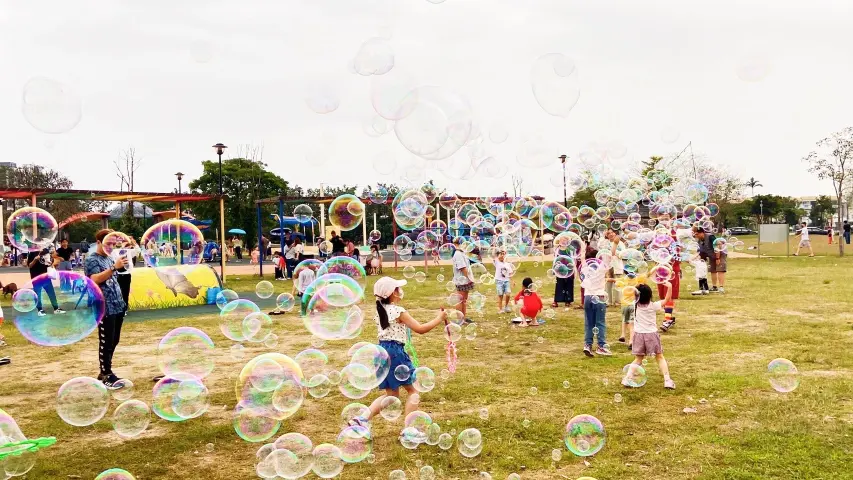
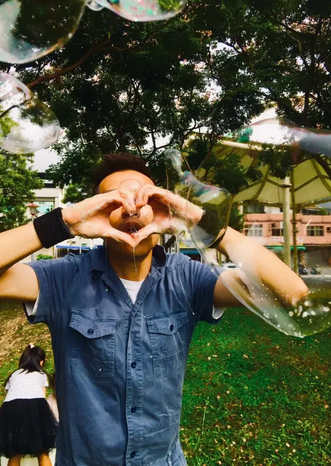
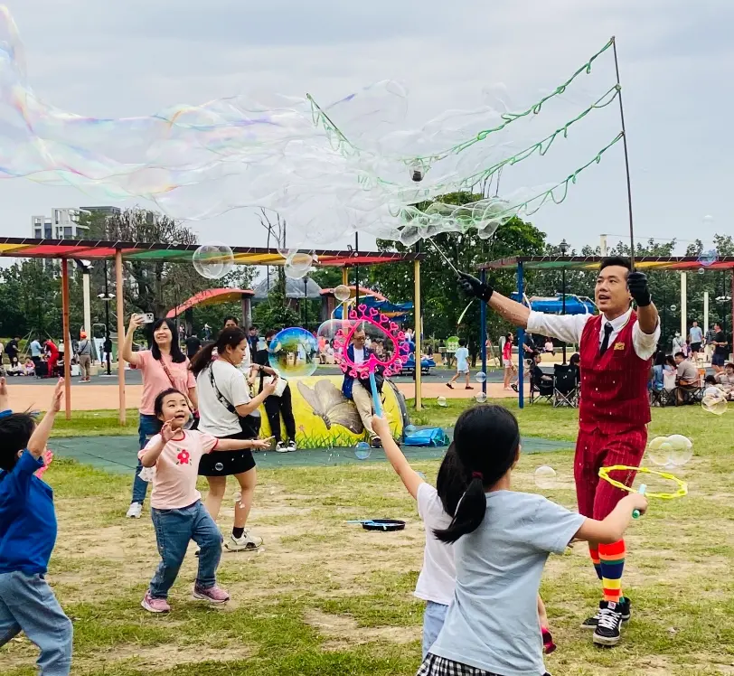
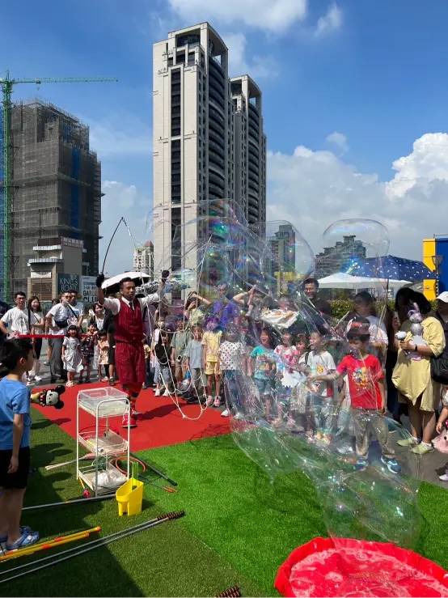
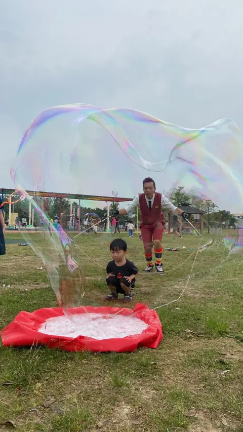
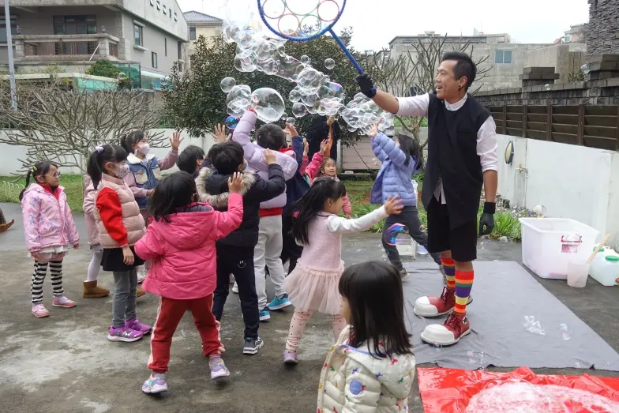

泡泡秀
魔幻泡泡 ✕ 舞台互動 ✕ 超吸睛拍照體驗
大型泡泡秀表演是一種結合物理科學、視覺張力與親子互動的沉浸式感官體驗。正在尋找一場讓全場驚呼連連的夢幻表演嗎？氣球大叔 Sony 提供繽紛魔幻的泡泡秀表演。服務以北中部（基隆/雙北/桃園/新竹/苗栗/台中）為主，其餘縣市歡迎洽詢，打造讓孩子難忘的驚喜時刻！
🏆 各大指標企業與親子節慶指定表演：
擁有 10年以上戶外與室內演出經驗，累計服務超過 3000 場次。感謝 巴斯夫 BASF、台積電、IKEA、遠雄建設 以及全台各大幼兒園、社區長期指定合作，給您最震撼、安全的泡泡體驗。
- ⏱️ 演出精華： 約 25 分鐘專業泡泡秀，包含多種視覺特效與互動。
- 🫧 互動體驗： 可規劃「大泡泡拍照區」、「泡泡套人」等專屬環節。
- 🧼 安全無憂： 室內提供防滑措施與清潔收尾，流程更放心。
- 📍 服務地區： 北中部為主（基隆/雙北/桃園/新竹/苗栗/台中），其餘洽詢。






🔥 相關大型戶外與親子實績：
- 👉 外商親子日：新竹綠世界 BASF 巴斯夫親子日戶外演出
- 👉 官方綠能節：桃園綠色生活悠遊節大型戶外互動
- 👉 百貨萬人展：新竹巨城 Big City 創業成果展引流秀
- 👉 市府官方辦：台北林安泰古厝納涼電影院戶外演出
常見問題 FAQ
Q1：你們的泡泡秀表演有哪些內容？適合什麼場合？
A1：包含煙霧泡泡、巨大泡泡及親子互動。適合親子日、校園活動、百貨快閃及家庭日。
Q2：泡泡秀會不會弄濕地板或造成滑倒？
A2：我們以安全優先。室內鋪設防滑墊並清潔收尾；戶外則事前評估地面材質，降低滑倒風險。
Q3：泡泡秀可以讓觀眾參與嗎？
A3：可以！可安排泡泡套人拍照、親手體驗泡泡道具等環節，讓觀眾親身參與。
Q4：可以和其他表演一起安排嗎？
A4：當然可以！泡泡秀常與氣球魔術表演、造型氣球派送搭配，依活動流程安排成完整節目。